00이 매뉴얼에 대하여
공조 덕트 규격 산정 시스템은 공조 · 환기 덕트의 풍량과 마찰손실 기준으로 사각 · 원형 · 편평 덕트 규격을 정하고 풍속 · 판두께 · 장단비를 확인한 뒤, 계통 정압(마찰 + 국부저항)과 A4 산정서까지 만듭니다. 근거는 기계설비 기술기준 국토교통부 고시 제2021-851호(제2026-360호로 타법개정, 2026. 7. 8. 시행) 별표 9 덕트설비이며, 별표 9에 수치가 없는 값(설계 권장 풍속 · λ 고정값 · 피팅 ζ · 보강 간격 등)은 실무 참고값으로 구분해 표시합니다.
| 항목 | 내용 |
|---|---|
| 대상 프로그램 | 공조 덕트 규격 산정 시스템 MANMIN Ver-6.1(v6.1.5) — 탭 막대 「📘 매뉴얼」 버튼으로 이 문서가 열립니다 |
| 접속 주소 | manminkim-eng.github.io/Air-Conditioning-Duct |
| 매뉴얼 판 | Ver-6.1 (화면 표기와 같은 판 번호 · v6.1.5 화면 기준) · 2026-11-24 · 작성 김만민 건축사(㈜대성건축사사무소) |
| 내려받기 | PDF(A4) · 공조 덕트 규격 산정 시스템 열기 |
| 예제 | 본문 그림은 예제 A(업무시설 AHU-1 급기 주덕트 12,000 m³/h)로 캡처했습니다 — 800×600 mm · 6.94 m/s · 0.844 Pa/m · 판두께 0.8 mm. 원형 분기(예제 B) · 높이 제약(예제 C) · 스테인리스(예제 D) · 다중 · 정압 예제는 부록 A2 |
| 근거 기준 | 기계설비 기술기준 국토교통부 고시 제2021-851호(제2026-360호로 타법개정, 2026. 7. 8. 시행) 별표 9 1.3 · 2.1(1)(4)(5)(6)(10) · 표 1 · 표 2 · 표 4 · 2.2.2 표 7 · 표 8(스테인리스) — LawMCP 원문 대조(2026-11-24) · 관련 KDS 31 25 30 : 2026 덕트설비 · KDS 31 25 20 : 2026 환기설비 · KCS 31 20 20 : 2026 덕트설비공사 · KCS 31 25 20 환기설비공사(별표 9 1.3) |
| 읽는 순서 | 처음이면 1장 → 2장(따라하기) → 필요할 때 3장(화면별 상세). 설계도서에 반영하기 전에는 4장(기술기준) · 5장(작업 방법) |
01한눈에 보기
설치 없이 브라우저에서 바로 실행되는 단일 페이지 앱(PWA)입니다. 입력한 내용은 브라우저 안에서만 계산되며 서버로 전송되지 않습니다.
무엇을 산정하나
채택 규격(W×H · Φ) · 실제 풍속 · 마찰손실률 · 수력직경 · 판두께 · 유속 범위(별표 9 표 1) 판정
작업 4종
단일 덕트 산정 / 다중 덕트 일괄 산정 / 계통 정압 계산 / 설계 기준표 · A4 산정서
근거
기계설비 기술기준 별표 9 덕트설비 · Darcy-Weisbach 등마찰손실법
1-1. 화면 구성
- 1작업 탭: 단일 · 다중 · 정압 · 설계 기준표 · A4 · 매뉴얼
- 2요약 스트립: 형상 · 풍량 · 채택 규격 · 풍속 · ΔP/L · 판두께
- 3진행 단계(공사 정보 → 덕트 조건 → 풍량 → 규격 산정)
- 4STEP 1 공사 정보(A4 표제)
- 5STEP 2 덕트 조건
- 6STEP 3 풍량 입력
- 7STEP 4 산정 결과
- 8오른쪽 아래 「초기화」 · 「설계기준」 안내
| 영역 | 내용 |
|---|---|
| 왼쪽 — STEP 2 | 덕트 형상 → 설치 장소 → 마찰손실 기준 → 재질 → λ 산정 방식 → 플렉시블 압축률 → 장단비 제한 → 압력 구분(저압/고압 1 · 2) |
| 가운데 — STEP 3 | 풍량 단위(CMH · CMS · CFM) → 풍량 → 빠른 선택 → 치수 제한(W 또는 H 고정 · 원형 Φ 고정) |
| 오른쪽 — STEP 4 | 종합 판정 배지 · 채택 규격 · 실제 풍속 → 풍속 게이지 → 산정 상세(λ · Re · 판두께 · 유속 범위) → 인접 규격 비교 → 경고 |
1-2. 작업 탭·근거 표시
- 1단일 덕트 산정
- 2다중 덕트 산정 — 여러 구간 일괄
- 3정압 계산 — 마찰 + 국부저항 → 팬 정압
- 4설계 기준표 — 풍속 · 마찰손실 · 규격 · 판두께
- 5A4 미리보기 — 산정서 · 인쇄 · JPG
- 6매뉴얼(이 문서)
- 7근거: 기계설비 기술기준 고시 제2021-851호 · 제2026-360호 타법개정 · 2026. 7. 8. 시행
1-3. 설치·보관·매뉴얼
| 항목 | 내용 |
|---|---|
| 설치 | 주소창의 설치 아이콘 또는 휴대전화 「홈 화면에 추가」로 앱처럼 쓸 수 있습니다. 한 번 연 뒤에는 인터넷 없이도 계산됩니다 |
| 결과 보관 | 단일 · 다중 · 정압 결과는 A4 산정서에 함께 나옵니다. 문서로 남기려면 A4 산정서(PDF · JPG)를 쓰십시오 |
| 건물개요 | 화면 오른쪽 「🏢 건물개요」 단추로 공사명(사업명) · 작성자를 다른 MANMIN 도구와 저장 · 불러오기로 나눠 씁니다(v6.1.1). 이미 입력된 칸은 직접 체크해야 덮어씁니다 |
| 매뉴얼 | 탭 막대 오른쪽 끝 「📘 매뉴얼」 — 인터넷 연결 시 새 창으로 열립니다. 좁은 화면에서는 탭 막대를 좌우로 밀면 보입니다 |
| 업데이트 | 새 버전이 올라오면 다음 접속 때 자동으로 바뀝니다. 화면이 예전 그대로면 새로 고침(Ctrl+F5) |
021분 따라하기
예제 A로 6단계를 따라 하면 800×600 mm · 6.94 m/s · 0.844 Pa/m · 판두께 0.8 mm가 나옵니다.
- ① 공사 정보STEP 1에 공사명 · 산정일자 · 작성자를 넣습니다. A4 산정서 표제에 들어갑니다.
- ② 덕트 조건STEP 2에서 「사각덕트」, 설치 장소 「급기 주덕트」, 마찰손실 1.0 Pa/m, 아연도금강판, 고정 λ, 장단비 「4:1 이내」, 압력 구분 「저압」을 고릅니다(3-1).
- ③ 풍량STEP 3에 12000(m³/h)을 넣습니다. 입력하는 대로 자동 산정됩니다(3-2).
- ④ 결과 확인채택 규격 800×600 · 실제 풍속 6.94 m/s(권장 5~8 m/s · 유속 범위 15 m/s 이하) · 배지 「✅ 적정」 · 판두께 0.8 mm(별표 9 표 2)(3-3).
- ⑤ 정압「📉 정압 계산」 탭에서 직관 구간과 피팅을 넣고 장비 기외정압(ESP)과 비교합니다(3-7).
- ⑥ A4 산정서「📄 A4 미리보기」에서 「🖨️ 인쇄 / PDF 저장」 또는 「🖼️ JPG 저장」(3-10).
| 항목 | 예제 A |
|---|---|
| 채택 규격 | 800×600 mm (장단비 1.33 : 1) |
| 단면적 · 수력직경 | 4,800 cm² · Dh 685.7 mm |
| 실제 풍속 | 6.944 m/s |
| 마찰손실 ΔP/L | 0.844 Pa/m (기준 1.0 이하) |
| 마찰계수 λ · Re | 0.02 (고정) · 317,460 |
| 판두께 | 0.8 mm (저압 · 별표 9) |
| 유속 범위(별표 9 표 1) | 15 m/s 이하 — 적합 |
03화면별 기능 상세
3-1. STEP 2 덕트 조건
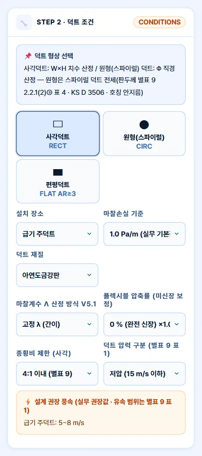
123456789- 1① 덕트 형상(사각 · 원형 · 편평 AR≥3)
- 2② 설치 장소(권장 풍속 구분)
- 3③ 마찰손실 기준
- 4④ 덕트 재질
- 5⑤ λ 산정 방식
- 6⑥ 플렉시블 압축률
- 7⑦ 장단비 제한
- 8⑧ 압력 구분(별표 9 표 1)
- 9설계 권장 풍속 안내
| 항목 | 내용 |
|---|---|
| 설치 장소 | 급기 · 환기 · 배기 주덕트/분기 · 외기덕트 — 실무 권장 풍속 범위(판정용)가 바뀝니다 |
| 마찰손실 기준 | 0.8 · 1.0(실무 기본값) · 1.5 · 2.0 Pa/m 또는 직접 입력 — 등마찰손실법의 목표 ΔP/L. 1.0 Pa/m는 별표 9 · KDS 31 25 30에 정한 수치가 아닌 실무 기본값입니다(v6.1.5 — 종전 「표준」). 직접 입력이 0 · 빈 값 · 음수이면 산정하지 않습니다(3-12) |
| 재질 · λ | 고정 λ(아연 0.020 · 알루미늄 0.018 · 스테인리스 0.015 · 플렉시블 0.050) 또는 Colebrook(Swamee-Jain, 절대조도 ε · Re로 계산) |
| 스테인리스 판두께 | 저압이면 별표 9 2.2.2 표 7(장방형) · 표 8(스파이럴) 값으로 표시합니다(v6.1.5 — 예제 A 조건 + 스테인리스 → 700×600 · 0.5 mm). 고압 1 · 2와 Φ1,000 초과 스파이럴은 별표 9에 없어 「미규정 · 참고」(표 2 · 표 4 값)(4-5) |
| 장단비 제한 | 「4:1 이내(별표 9)」가 기본. 6:1 · 8:1은 별표 9 2.1(1)의 보강조치를 전제로 고르는 값입니다 |
| 압력 구분 | 저압(±500 Pa · 15 m/s 이하) / 고압 1 · 2(20 m/s 이하) — 판두께 표와 유속 범위(별표 9 표 1)가 함께 바뀝니다. STEP 2를 바꾸면 다중 산정 결과도 같은 설정으로 다시 산정됩니다(v6.1.5) |
3-2. STEP 3 풍량 입력
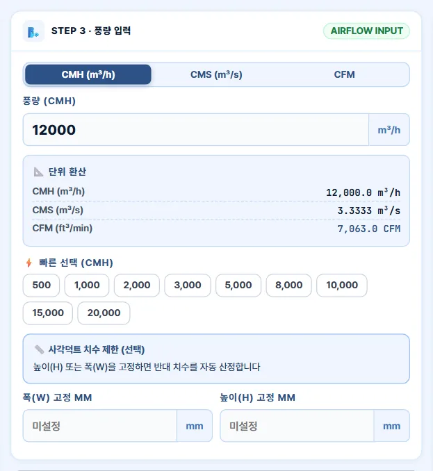
12345- 1① 풍량 단위 CMH · CMS · CFM
- 2② 풍량
- 3③ 단위 환산
- 4④ 빠른 선택
- 5⑤ 치수 제한(선택)
| 항목 | 내용 |
|---|---|
| 단위 | 1 m³/s = 3,600 m³/h · 1 CFM = 1.699 m³/h — 어느 단위로 넣어도 m³/h로 환산해 계산 |
| 풍량 0 · 빈 값 · 음수 | 산정하지 않고 옛 결과를 지웁니다 — 결과 카드 · 요약 스트립 · A4가 「산정 대기」, 0 · 음수이면 칸에 빨간 테두리(v6.1.5, 3-12) |
| 치수 제한 | 보 · 천장 속 높이가 정해졌으면 H(또는 W)를 고정합니다. 고정 치수로 기준을 만족하는 규격이 없으면 가장 가까운 규격과 「치수 고정(검증)」 안내가 나옵니다. 표준 치수 목록에 없는 값을 넣으면 가까운 표준 치수로 바꿔 쓰고 칸 경고 「목록 밖 → ○ mm 적용」과 결과 · A4 「고정 치수: W 입력 ○ → 적용 ○ mm」를 표시합니다(v6.1.5) |
| 원형 Φ 고정 | 원형덕트는 Φ를 고정하면 그 구경의 풍속 · ΔP/L을 검증합니다(비표준 구경 허용) |
3-3. STEP 4 산정 결과
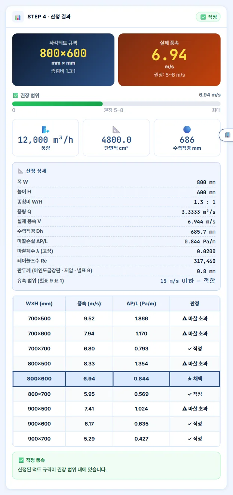
12345- 1채택 규격 · 실제 풍속
- 2풍속 게이지(권장 범위)
- 3풍량 · 단면적 · 수력직경
- 4산정 상세 — λ · Re · 판두께 · 유속 범위
- 5인접 규격 비교(★ 채택)
| 항목 | 내용 |
|---|---|
| 종합 판정 배지 | 카드 오른쪽 위 배지는 ① 유속 범위(표 1) 초과 「⛔ 유속 범위 초과」 → ② ΔP/L 기준 초과 「⚠️ 마찰 초과」 → ③ 사각 장단비 4:1 초과 「🔧 보강 필요」 → ④ 권장 풍속 「✅ 적정 · ⚠️ 초과 · 🔵 여유」 순서로 정합니다(v6.1.5 — 예제 C가 「✅ 적정」 → 「🔧 보강 필요」) |
| 풍속 판정 | 설치 장소별 실무 권장 범위 기준 — 적정 · 초과 · 여유(저속). 별표 9 표 1 판정과 구분됩니다 |
| 유속 범위(별표 9 표 1) | 저압 15 m/s · 고압 1 · 2 20 m/s 이하. 넘으면 「⛔ 별표 9 표 1 유속 범위 초과」 경고(v6.1.5 — 종전 「법정 풍속 상한」 표기) |
| 판두께 | 별표 9 표 2(사각) · 표 4(스파이럴) — 압력 구분과 장변(직경)으로 결정. 스테인리스 저압은 표 7 · 표 8(v6.1.5). 알루미늄 · 플렉시블은 별표 9에 규정이 없어 「참고(별표 9 미규정)」로 표시 |
| 인접 규격 | 채택 규격 주변 표준 규격의 풍속 · ΔP/L — 천장 속 높이나 시공성 때문에 한 단계 바꿀 때 비교. 판정은 「⛔ 유속 범위 초과」(표 1) → 「⚠ 마찰 초과」(ΔP/L 기준 초과) → 「✓ 적정 · ⚠ 풍속 초과 · 🔵 저속」(권장 풍속) 순서 |
| 비표준 · 최대 규격 | 표준 조합으로 기준을 못 맞춰 50 mm 올림 자유 치수를 쓰면 「비표준(50 mm 올림)」, 원형 소요 구경이 표준 최대 Φ1250을 넘으면 「📏 표준 최대 Φ1250 초과 — 사각 · 복수 덕트 검토」 경고와 A4 「최대 규격」 행(v6.1.5) |
3-4. 원형덕트 결과
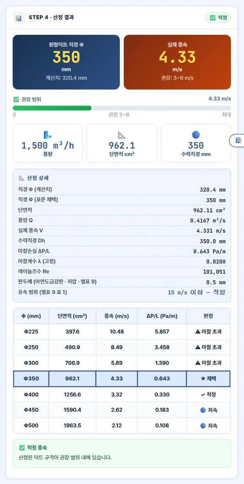
12- 1Φ350 · 4.33 m/s
- 2산정 상세
원형은 D⁵ = 8λρQ² ÷ (π²ΔP/L)로 소요 구경(약 Φ320)을 구한 뒤 그 이상인 표준 구경 중 가장 작은 것을 채택합니다. 예제 B는 Φ350 · 4.33 m/s · 0.643 Pa/m · 판두께 0.5 mm(표 4 저압 450 이하)입니다. 예전 판은 가장 가까운 Φ300을 골라 1.39 Pa/m로 기준을 넘었습니다.
3-5. 높이 제약·장단비
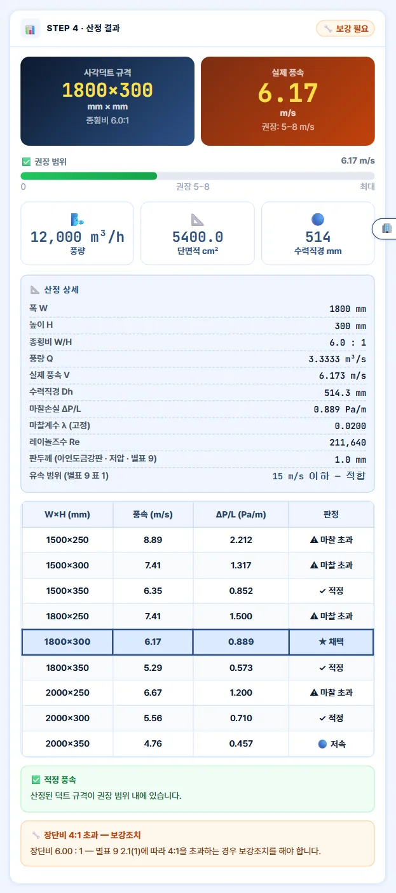
12345- 11800×300 · 6.17 m/s
- 2판두께 1.0 mm · 유속 범위 적합
- 3인접 규격
- 4장단비 4:1 초과 — 보강조치
- 5종합 판정 배지 「🔧 보강 필요」
천장 속 높이가 300 mm로 묶인 경우입니다. 4:1 이내로는 1200×300(1.74 Pa/m)밖에 안 되어 기준을 넘으므로, 장단비 제한을 「8:1(보강조치 전제)」로 풀면 1800×300(장단비 6 : 1 · 0.889 Pa/m)이 채택됩니다. 결과와 A4에 「장단비 4:1 초과 — 보강조치」가 표시되며, 장변 1800 mm의 판두께는 표 2 저압 1,500 초과 ~ 2,250 이하 → 1.0 mm입니다(예전 판 1.2 mm).
v6.1.5부터 카드 오른쪽 위 종합 판정 배지가 「🔧 보강 필요」입니다. 풍속은 권장 범위(적정)이지만 장단비 4:1 초과로 보강조치가 필요하다는 뜻입니다(종전 판은 풍속만 보고 「✅ 적정」). 규격 · 풍속 · ΔP/L · 판두께 값은 바뀌지 않았습니다.
3-6. 다중 덕트 산정
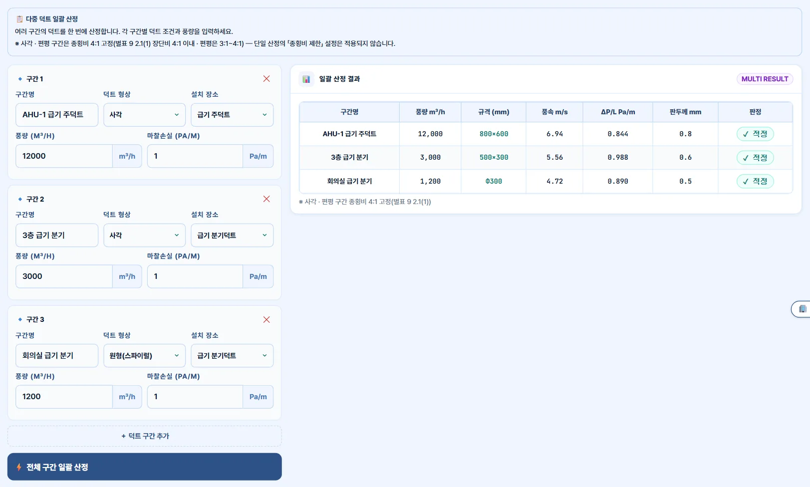
1234- 1구간 입력(이름 · 형상 · 설치 장소 · 풍량 · ΔP/L)
- 2구간 추가
- 3전체 구간 일괄 산정
- 4일괄 산정 결과
| 구간 | 규격 | 풍속 m/s | ΔP/L Pa/m | 판두께 mm | 판정 |
|---|---|---|---|---|---|
| AHU-1 급기 주덕트 | 800×600 | 6.94 | 0.844 | 0.8 | 적정 |
| 3층 급기 분기 | 500×300 | 5.56 | 0.988 | 0.6 | 적정 |
| 회의실 급기 분기 | Φ300 | 4.72 | 0.89 | 0.5 | 적정 |
재질 · λ 방식 · 압력 구분은 STEP 2 설정을 따르며, 사각 구간은 장단비 4:1 이내에서 단일 산정과 같은 규칙(Fr ≤ 기준 중 최소 단면)으로 고릅니다(v5.1.1 — 예전 판은 고정 λ로만 계산). 결과표와 A4에는 판두께 열이 있고, 유속 범위(표 1)를 넘는 구간은 「⛔ 유속 범위 초과」, 원형 소요 구경이 표준 최대 Φ1250을 넘는 구간은 「⚠ 최대 규격 초과」로 표시합니다.
| 항목 | 내용 |
|---|---|
| 읽는 구간 | 「전체 구간 일괄 산정」은 다중 덕트 산정 탭의 구간만 읽습니다. 정압 계산 탭의 직관 구간 · 피팅과 섞이지 않습니다(v6.1.5 — 종전 판은 정압 탭을 연 뒤 일괄 산정이 멈췄음) |
| 풍량 · 마찰손실 확인 | 풍량이 비면 「풍량 미입력」, 0 · 음수이면 「풍량 0 이하 — 산정 안 함」, 마찰손실이 0 · 빈 값 · 음수이면 「마찰손실 0 이하 · 빈 값 — 산정 안 함」 행으로 남기고 계산하지 않습니다. 칸에는 빨간 테두리, A4 끝에는 「⚠ 입력 확인」 줄(v6.1.5) |
| STEP 2 연동 | 재질 · 압력 구분 · λ 방식 · 플렉시블 압축률을 바꾸면 다중 결과도 같은 설정으로 자동 재산정됩니다(v6.1.5) |
3-7. 정압 계산
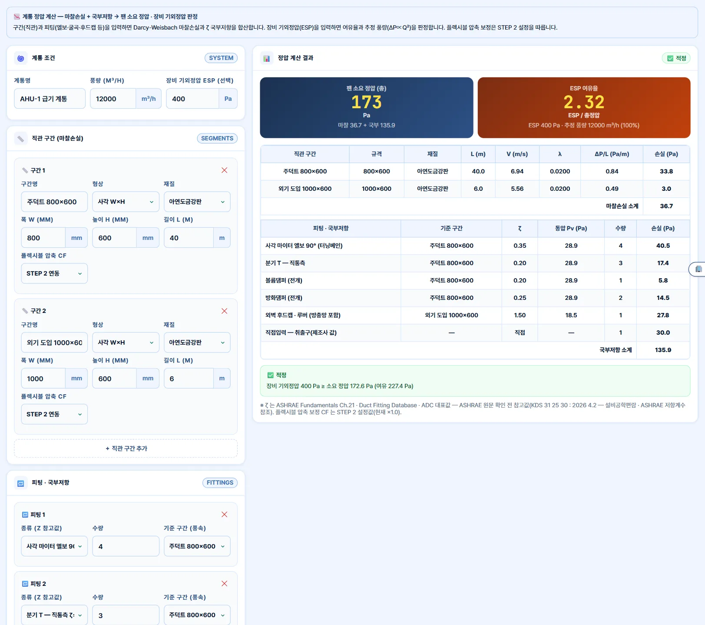
1234- 1계통 조건 · 장비 기외정압 ESP
- 2직관 구간(규격 · 재질 · 길이)
- 3피팅 · 국부저항(ζ · 수량 · 기준 구간)
- 4정압 계산 결과 · ESP 판정
| 항목 | 내용 |
|---|---|
| 마찰손실 | 구간별 ΔP = ΔP/L × L — 예제 소계 36.7 Pa |
| 국부저항 | ΔP = ζ × ρV²/2 × 수량 — 예제 소계 135.9 Pa (취출구 등은 직접입력 Pa) |
| 팬 소요 정압 | 172.6 Pa → ESP 400 Pa ≥ 소요 정압 · 적정(여유율 2.32) |
| ζ 출처 | ASHRAE Fundamentals Ch.21 · Duct Fitting Database · ADC 대표값 — ASHRAE 원문 확인 전 참고값(KDS 31 25 30 : 2026 4.2 — 설비공학편람 · ASHRAE 저항계수 참조). 제조사 시험값이 있으면 직접입력 |
| 입력 오류 | 길이 L · 피팅 수량 · 직접입력 손실이 음수이거나, 피팅의 기준 구간을 지웠으면 「⛔ 입력 오류 — 계산 안 함」으로 결과를 지우고 배지 「⚠ 입력 확인」(v6.1.5). 지운 기준 구간은 선택 칸에 「⚠ 삭제된 구간 — 다시 선택」으로 남습니다(종전 판은 첫 구간으로 몰래 바뀜) |
3-8. 설계 기준표
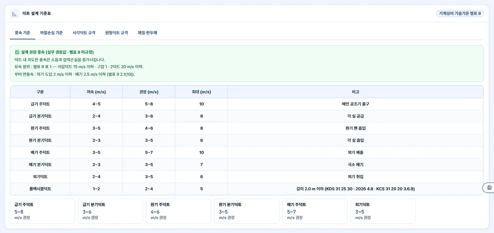
123- 1기준표 5종
- 2유속 범위(표 1) · 루버 면풍속(별표 9)
- 3설계 권장 풍속(실무 권장값)
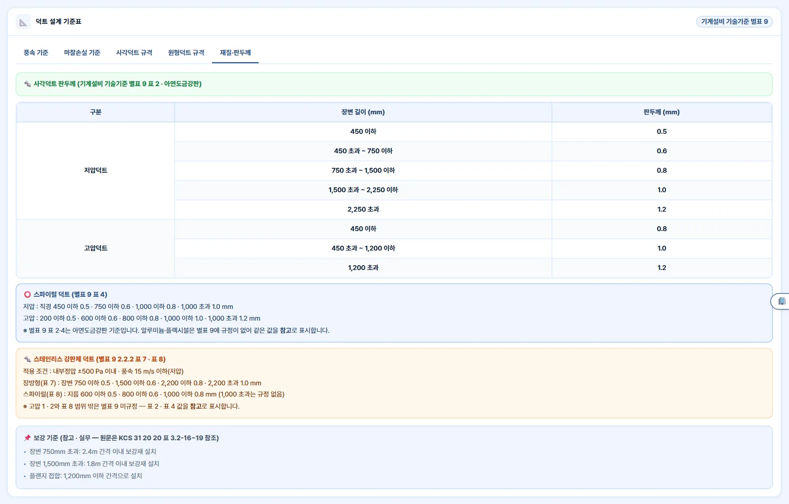
1234- 1사각 판두께(별표 9 표 2)
- 2스파이럴(별표 9 표 4)
- 3스테인리스(별표 9 2.2.2 표 7 · 표 8)
- 4보강 기준(참고 · 실무 — KCS 31 20 20 표 3.2-16~19)
권장 풍속표는 별표 9에 없는 실무 권장값이므로 제목에 「별표 9 미규정」을 붙였고, 유속 범위(표 1 — 저압 15 m/s · 고압 1 · 2 20 m/s 이하)와 루버 면풍속(2.1(10) 외기 도입 2 m/s 이하 · 배기 2.5 m/s 이하)을 따로 적었습니다.
| 항목 | 내용 |
|---|---|
| 플렉시블 덕트 | 비고가 「최대 1.5 m 이내」 → 「길이 2.0 m 이하 (KDS 31 25 30 : 2026 4.8 · KCS 31 20 20 3.6.9)」로 바뀌었습니다(v6.1.5). 설계기준 안내 창에는 「길이 2.0 m 이하 · 직선 시공 (KDS 31 25 30 : 2026 4.8 · KCS 31 20 20 3.6.9 — 별표 9 3.1(2)의 「1.5 m 이하」와 달라 별표 9 1.3에 따라 KDS · KCS를 따름)」으로 적혀 있습니다 |
| 마찰손실 기준 | 0.8 ~ 1.5 Pa/m는 실무 참고값 — 별표 9 · KDS 31 25 30에는 마찰손실 기준 수치가 없고 KDS 31 25 30 : 2026 4.1은 설비공학편람 · ASHRAE 계산 절차를 참조합니다. 1.0 Pa/m 행은 「실무 기본값(프로젝트별 조정)」(v6.1.5) |
| 사각덕트 규격 | 장단비 4:1 이내(2.1(1)) 아래에 단면 축소 30° · 확대 15° 이하(2.1(4)), 직각 곡관은 곡률반경 1.5 이상 엘보 또는 터닝베인(2.1(5)) 안내가 붙었습니다(v6.1.5) |
| 스테인리스 상자 | 적용 조건 ±500 Pa · 15 m/s 이하(저압) · 표 7 장변 750 이하 0.5 · 1,500 이하 0.6 · 2,200 이하 0.8 · 2,200 초과 1.0 · 표 8 지름 600 이하 0.5 · 800 이하 0.6 · 1,000 이하 0.8 mm(v6.1.5, 4-5) |
3-9. 설계기준 안내 창
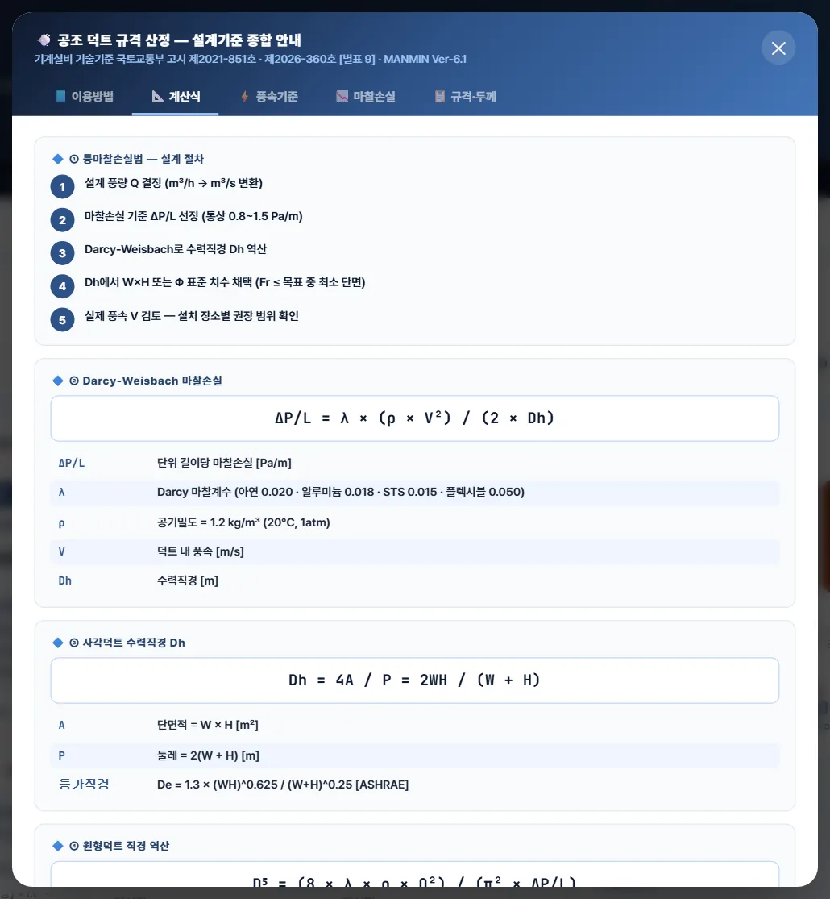
이용방법 · 계산식 · 풍속기준 · 마찰손실 · 규격·두께 5개 탭으로 앱 안에서 기준을 다시 볼 수 있습니다. 「이용방법」 탭에 적용 기술기준(별표 9 · KDS 31 25 30 등)이 정리되어 있습니다.
3-10. A4 미리보기·출력
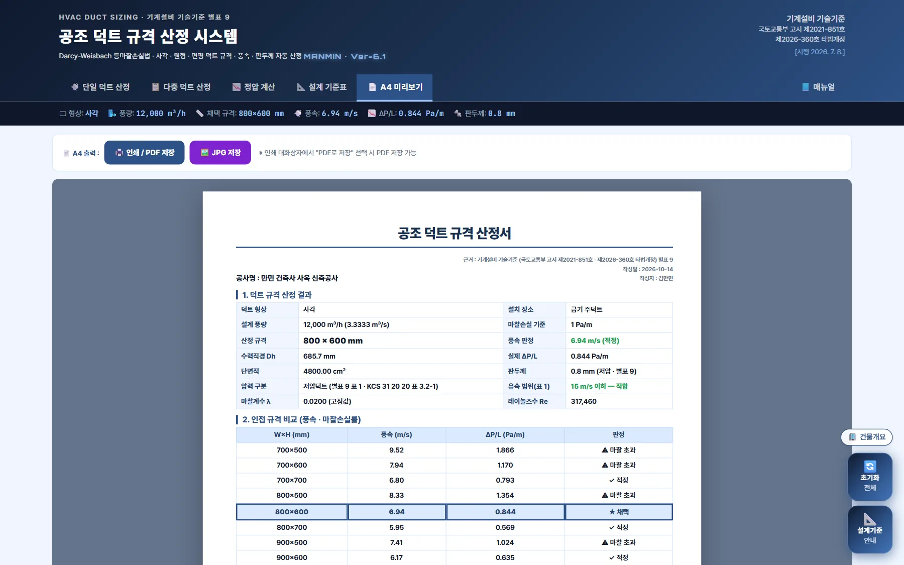
123- 1인쇄 / PDF 저장
- 2JPG 저장
- 3A4 산정서
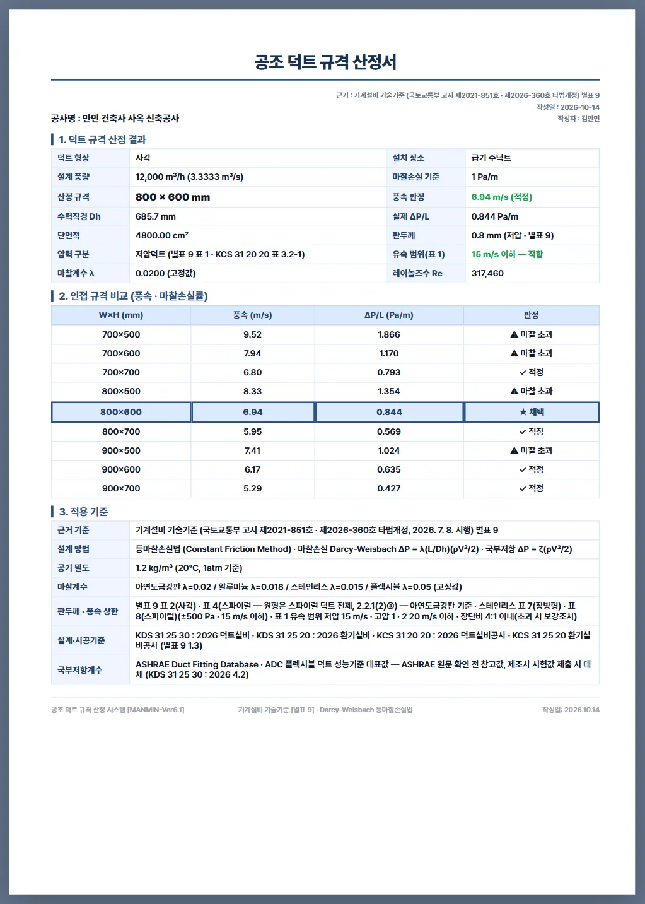
12- 1산정 결과표(압력 구분 · 유속 범위(표 1) 포함)
- 2인접 규격 비교
산정서에는 산정 결과 · 인접 규격 · 적용 기준이 나오고, 다중 · 정압 결과가 있으면 뒤에 이어집니다. 장단비가 4:1을 넘으면 「보강조치 필요」 행이 추가됩니다.
| 항목 | 내용 |
|---|---|
| 1. 산정 결과 | 「압력 구분 — 저압덕트(별표 9 표 1 · KCS 31 20 20 표 3.2-1)」 · 「유속 범위(표 1) 15 m/s 이하 — 적합」(v6.1.5 — 종전 「법정 풍속 상한」). 고압이면 「고압 1 · 2덕트」. 비표준 · 고정 치수 대체 · 표준 최대 Φ1250 초과가 있으면 「규격 구분」 · 「최대 규격」 행 |
| 3. 적용 기준 | 판두께 · 풍속 상한 행에 스테인리스 표 7 · 표 8, 설계 · 시공기준 행은 「KDS 31 25 30 : 2026 · KDS 31 25 20 : 2026 · KCS 31 20 20 : 2026 · KCS 31 25 20」, 국부저항계수 행은 「ASHRAE 원문 확인 전 참고값 … (KDS 31 25 30 : 2026 4.2)」 |
| 꼬리말 | 「공조 덕트 규격 산정 시스템 [MANMIN-Ver6.1]」 |
| 입력 확인 줄 | 풍량 · 마찰손실 · 고정 치수 · 다중 · 정압 칸에 0 · 음수 · 목록 밖 값이 있으면 산정서 끝에 「⚠ 입력 확인 — …」 줄이 붙어 인쇄 · JPG에도 나옵니다. 숨은 탭의 칸도 판정합니다(v6.1.5) |
| 산정 대기 | 단일 결과가 없으면 1절이 「산정 대기 — 단일 덕트 산정 탭에서 풍량(0보다 큰 값)을 입력해 산정하세요.」, 인접 규격 절은 숨김 · 인쇄 / JPG 단추는 「먼저 덕트 규격을 산정하세요」 안내만 내고 실행하지 않습니다(3-12) |
3-11. 휴대전화 화면
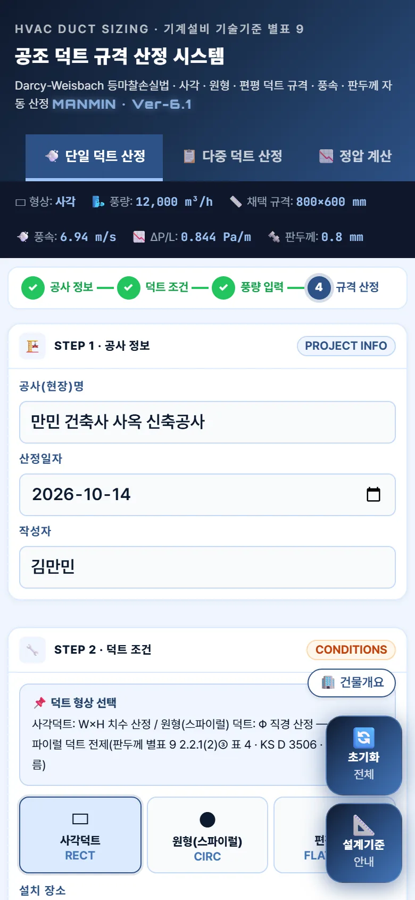
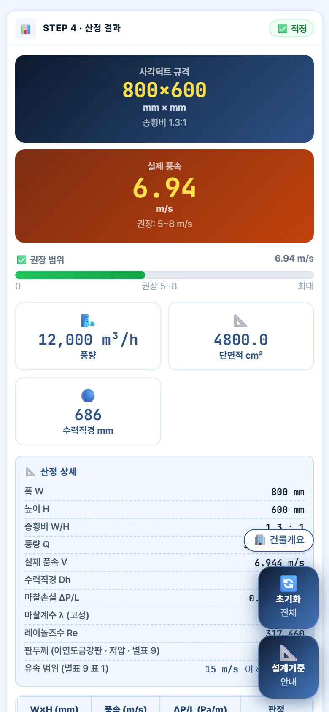
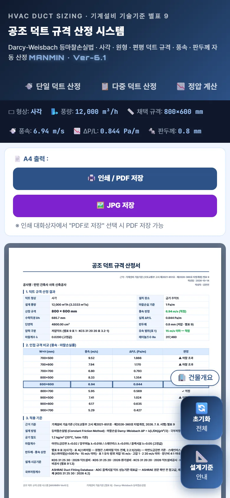
좁은 화면에서는 STEP 1 → 2 → 3 → 4가 한 줄로 쌓입니다. 탭 막대는 한 줄이며 좌우로 밀어 「매뉴얼」까지 볼 수 있습니다.
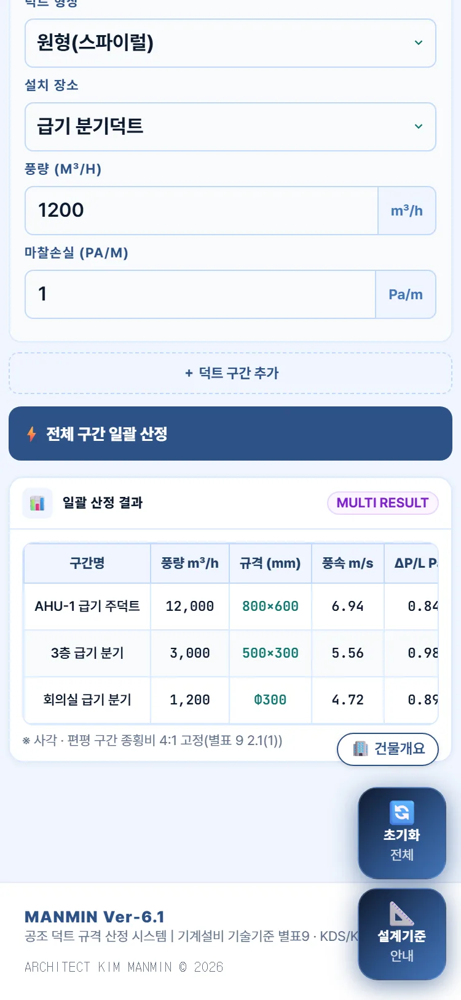
v6.1.5에서 375 px 폭 화면의 다중 · 정압 탭이 가로로 넘치던 것을 고쳤습니다. 입력 칸은 한 열로 쌓이고, 결과표만 표 안에서 좌우로 밀어 봅니다(예제 다중 결과 기준 페이지 폭 375 px = 화면 폭 375 px).
3-12. 입력 확인·산정 대기 (v6.1.5)
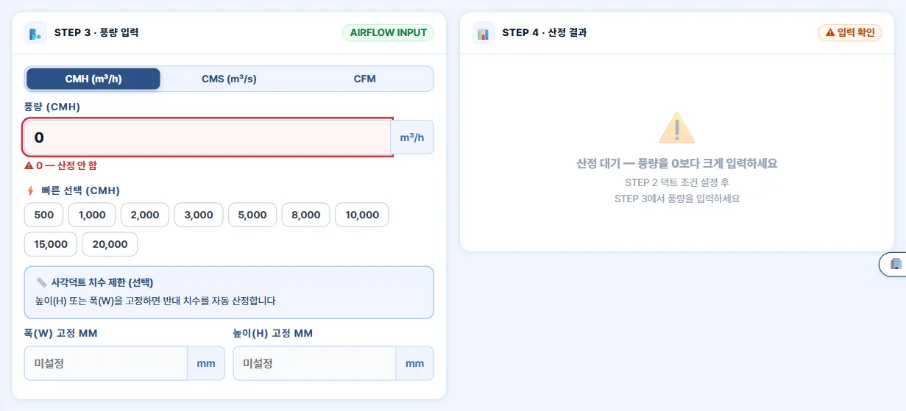
1234- 1풍량 칸 — 빨간 테두리
- 2「⚠ 0 — 산정 안 함」 안내
- 3결과 배지 「⚠ 입력 확인」
- 4산정 대기 — 옛 결과를 지움
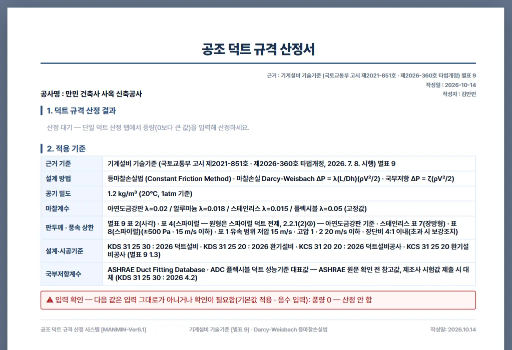
12- 11절 「산정 대기」(인접 규격 절 숨김)
- 2⚠ 입력 확인 줄(인쇄 · JPG에도 나옴)
| 상황 | 화면 · A4 |
|---|---|
| 풍량 0 · 음수 | 산정하지 않고 바로 앞 결과를 지웁니다 — 결과 카드 「⚠️ 산정 대기 — 풍량을 0보다 크게 입력하세요」 · 배지 「⚠ 입력 확인」 · 요약 스트립 「—」 · A4 1절 「산정 대기」. 칸 경고 「0 — 산정 안 함」(음수는 「음수 — 산정 안 함」)과 A4 「⚠ 입력 확인」 줄 |
| 풍량 빈 칸 | 처음 화면처럼 「💨 풍량을 입력하고 산정하세요」 · 배지 「RESULT」로 돌아가고 A4는 「산정 대기」 |
| 마찰손실 직접입력 0 · 빈 값 · 음수 | 「산정 대기 — 마찰손실 직접입력값을 0보다 큰 수로 입력하세요」(종전 판은 0 · 빈 값이 1.0으로 바뀌고 음수는 「NaN × NaN」이 나왔음) |
| 인쇄 · JPG 단추 | 결과가 없으면 「🖨️ 인쇄 / PDF 저장」 · 「🖼️ JPG 저장」 단추가 「먼저 덕트 규격을 산정하세요」 안내만 내고 실행하지 않습니다 — 옛 결과가 찍힌 산정서가 나가지 않습니다 |
| 고정 치수 | W · H · Φ 고정 칸이 음수이면 「음수 — 고정 안 함」, 목록 밖 값이면 「목록 밖 → ○ mm 적용」(계산 값은 바꾸지 않음) |
| 다중 · 정압 | 다중 구간 풍량 · 마찰손실 0 · 음수, 정압 길이 · 수량 · 직접입력 손실 음수도 칸 경고 · A4 「⚠ 입력 확인」 줄로 알립니다(3-6 · 3-7) |
빨간 테두리와 칸 아래 안내는 화면에만 보이고 인쇄에는 나오지 않습니다. 대신 산정서 끝 「⚠ 입력 확인」 줄이 인쇄 · JPG에 남습니다. 값을 고치면 경고와 줄이 바로 사라집니다.
04기술기준 해설
4-1. 근거 체계
| 근거 | 내용 |
|---|---|
| 별표 9 1.3 | 관련 기준: KDS 31 25 20 환기설비 · KDS 31 25 30 덕트설비 · KCS 31 20 20 덕트설비공사 · KCS 31 25 20 환기설비공사 — 앱 표기는 KDS 31 25 30 : 2026 · KDS 31 25 20 : 2026 · KCS 31 20 20 : 2026(v6.1.5) |
| 별표 9 2.1(1) | 사각덕트 장단비는 4:1 이내, 초과하는 경우 보강조치 |
| 별표 9 2.1(4) | 단면 변화는 축소 30° 이하 · 확대 15° 이하 |
| 별표 9 2.1(5) | 곡관부 곡률반경비 1.5 이상 또는 터닝베인 설치 |
| 별표 9 2.1(6) | 덕트 설계는 등속법 · 등마찰손실법 · 정압재취득법 — 이 앱은 등마찰손실법 |
| 별표 9 2.1(10) | 외기 도입 루버 면풍속 2 m/s 이하 · 배기 루버 2.5 m/s 이하 |
| 별표 9 표 1 | 압력 구분: 저압 ±500 Pa · 풍속 15 m/s 이하 / 고압 1 · 2 · 풍속 20 m/s 이하 |
| 별표 9 표 2 · 표 4 | 사각(앵글플랜지) · 스파이럴 덕트 판두께 — 압력 구분 · 장변(직경)별(아연도금강판) |
| 별표 9 2.2.2 표 7 · 표 8 | 스테인리스 강판제 덕트 판두께 — 장방형(표 7) · 스파이럴(표 8), 내부정압 ±500 Pa · 풍속 15 m/s 이하(v6.1.5) |
| KDS 31 25 30 : 2026 4.8 · KCS 31 20 20 3.6.9 | 플렉시블 덕트 길이 2.0 m 이하 — 별표 9 3.1(2)의 「1.5 m 이하」와 달라 별표 9 1.3에 따라 KDS · KCS를 따름(v6.1.5, 앱 문구 그대로) |
기계설비 기술기준 국토교통부 고시 제2021-851호(제2026-360호로 타법개정, 2026. 7. 8. 시행) · 별표 9 덕트설비 — LawMCP 원문 대조 2026-11-24(행정규칙 2100000282424) · KDS · KCS는 국가건설기준센터(kcsc.re.kr) 원문
4-2. 등마찰손실법
4-3. 규격 선정 규칙
표준 치수(100 ~ 2,500 mm) 조합 가운데 장단비 제한 · 편평(AR≥3) 조건을 만족하고 ΔP/L ≤ 기준인 규격 중 단면적이 가장 작은 것(같으면 장단비가 작은 것)을 채택합니다. 표준 치수로 만족하는 규격이 없으면 장단비 √2의 자유 치수를 50 mm 단위로 올려 산정하며, 이때도 λ는 본 산정과 같은 방식(고정 또는 Swamee-Jain 반복)을 씁니다. 예전 판은 기준에 「가장 가까운」 규격을 골라 기준을 넘는 규격이 채택될 수 있었습니다.
4-4. 풍속 — 유속 범위와 권장값
별표 9 표 1의 풍속은 압력 구분별 유속 범위 저압 15 m/s · 고압 1 · 2 20 m/s 이하뿐입니다. 앱의 설치 장소별 범위(급기 주덕트 5~8 m/s 등)는 소음 · 압력손실을 고려한 실무 권장값으로, 예전 판의 「기계설비 기술기준 기반」 표기를 「실무 권장값 · 별표 9 미규정」으로 고쳤습니다. 결과 화면 · A4에는 두 판정이 따로 나옵니다. v6.1.5부터 화면 · A4 표기를 「법정 풍속 상한」에서 표 1의 용어인 「유속 범위(별표 9 표 1)」로 바꿨습니다(판정 기준 값은 같음).
4-5. 판두께
| 구분 | 장변 · 직경(mm) → 판두께(mm) |
|---|---|
| 저압 사각(표 2) | 450 이하 0.5 · 750 이하 0.6 · 1,500 이하 0.8 · 2,250 이하 1.0 · 2,250 초과 1.2 |
| 고압 사각(표 2) | 450 이하 0.8 · 1,200 이하 1.0 · 1,200 초과 1.2 |
| 저압 스파이럴(표 4) | 450 이하 0.5 · 750 이하 0.6 · 1,000 이하 0.8 · 1,000 초과 1.0 |
| 고압 스파이럴(표 4) | 200 이하 0.5 · 600 이하 0.6 · 800 이하 0.8 · 1,000 이하 1.0 · 1,000 초과 1.2 |
| 스테인리스 장방형(표 7) | 750 이하 0.5 · 1,500 이하 0.6 · 2,200 이하 0.8 · 2,200 초과 1.0 — 저압(±500 Pa · 15 m/s 이하) |
| 스테인리스 스파이럴(표 8) | 600 이하 0.5 · 800 이하 0.6 · 1,000 이하 0.8 — 1,000 초과는 규정 없음 |
예전 판은 1,000 / 1,500 / 2,200 mm 경계에 1.0 / 1.2 / 1.5 mm를 써서 장변 1,000 mm를 넘으면 한 단계 두껍게 나왔고, 알루미늄에는 출처 없는 +0.1 mm를 더했습니다. v5.1.1에서 표 2 · 표 4 원문으로 바꾸고 알루미늄 · 플렉시블은 같은 값을 「참고(별표 9 미규정)」로 표시합니다. 아연도금강판 값은 v6.1.5에서도 그대로입니다.
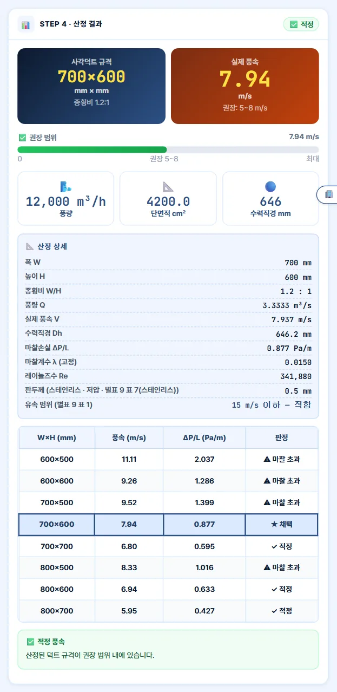
12- 1700×600 · 7.94 m/s
- 2판두께 0.5 mm · 별표 9 표 7(스테인리스)
스테인리스(v6.1.5) — 종전 판은 스테인리스에도 아연도금강판 표 2 · 표 4 값을 「별표 9」로 표시했습니다. v6.1.5부터 저압이면 별표 9 2.2.2 표 7(장방형) · 표 8(스파이럴) 값을 씁니다. 예제 D(예제 A 조건 + 스테인리스, λ 0.015)는 700×600 mm · 7.94 m/s · 0.877 Pa/m · 판두께 0.5 mm(표 7 장변 750 이하)이며 판두께 칸에 「저압 · 별표 9 표 7(스테인리스)」로 나옵니다. 같은 700×600을 아연도금강판 표 2로 보면 0.6 mm입니다.
| 조건 | 판두께 표기 |
|---|---|
| 저압 · 표 7 · 8 범위 안 | 「저압 · 별표 9 표 7(스테인리스)」 또는 「… 표 8(스테인리스)」 |
| 고압 1 · 2 | 표 7 · 8은 ±500 Pa · 15 m/s 이하만 정하므로 「고압 1 · 2 · 미규정 · 참고(별표 9 표 7 · 8은 ±500 Pa · 15 m/s 이하만 — 표 2 값)」(스파이럴은 표 4 값) |
| 스파이럴 Φ1,000 초과 | 「저압 · 미규정 · 참고(별표 9 표 8은 Φ1,000 이하만 — 표 4 값)」 |
4-6. 장단비·형상
장단비 4:1 이내가 원칙이며 넘으면 보강조치를 합니다(2.1(1)). 예전 판의 「1:8을 초과하면 안 됩니다」 · 「최대 8:1(한계)」는 근거가 없어 「6:1 · 8:1(보강조치 전제)」로 고쳤습니다. 사각덕트 표준 치수의 「KS B 6141」 표기는 해당 번호가 덕트 규격임을 확인하지 못해 「실무 표준치수」로 바꿨습니다. 엘보는 곡률반경비 1.5 이상 또는 터닝베인(2.1(5)), 확대 15° · 축소 30° 이하(2.1(4))로 계획하고 정압 계산의 ζ 선택에 반영하십시오.
4-7. 정압 계산
4-8. 계산 범위·한계
| 항목 | 내용 |
|---|---|
| 계산하는 것 | 등마찰손실법 규격 선정(사각 · 원형 · 편평), 풍속 · ΔP/L · Re, 판두께(표 2 · 표 4 · 스테인리스 표 7 · 표 8), 유속 범위(표 1) · 장단비 판정, 다중 구간, 계통 정압 |
| 계산하지 않는 것 | 정압재취득법 · 등속법 설계, 소음(NC) 계산, 보강재 · 행거 상세(표 5), 누기량, 단열 두께 |
| 참고값 | 설치 장소별 권장 풍속 · λ 고정값 · ζ · 보강 간격(2.4 m · 1.8 m · 1,200 mm)은 실무 참고값 |
4-9. v5.1.1 근거·계산 정정 (2026-10-14)
| 항목 | 기존 | 정정 |
|---|---|---|
| 헤더 개정 표기 | 제2026-360호 일부개정 | 제2026-360호 타법개정 · A4 · 안내 창에도 고시번호 추가 |
| 사각 판두께 | 1,000 초과 1.0 · 1,500 초과 1.2 · 2,200 초과 1.5 | 표 2: 750~1,500 0.8 · 1,500~2,250 1.0 · 2,250 초과 1.2 · 고압 반영 |
| 알루미늄 판두께 | +0.1 mm(코드) · 가이드 표 별도 값 | 별표 9 미규정 → 참고 표시 |
| 스파이럴 판두께 | 저압만 | 표 4 저압 · 고압 |
| 권장 풍속표 | 「기계설비 기술기준(별표 9)」 | 실무 권장값 · 법정 상한 15/20 m/s 별도 판정 |
| 장단비 | 「1:8 초과 안 됨」 · 8:1 한계 | 4:1 이내 · 초과 시 보강조치(2.1(1)) |
| 사각 규격 출처 | KS B 6141 | 실무 표준치수 |
| 관련 기준 | 없음 | KDS 31 25 30 · KDS 31 25 20 · KCS 31 25 20(1.3) |
| 규격 선정 | 기준에 가장 가까운 규격 | ΔP/L ≤ 기준 중 최소 단면(원형: 소요 구경 이상 최소) |
| 자유 치수 λ | 항상 고정 λ | 본 산정과 같은 λ(Swamee-Jain 반복) |
| 다중 구간 | 고정 λ · 가장 가까운 규격 | 단일 산정과 같은 규칙 |
| 루버 면풍속 | 없음 | 2.1(10) 외기 2 m/s · 배기 2.5 m/s 안내 |
v5.1.2 추가 정정 — ① 「초기화」가 형상 · 설치 장소 · 마찰손실 기준 · 재질 · 장단비 · 풍량 단위를 되돌리지 않던 것을 기본값으로 되돌리게 했습니다. ② 인접 규격 표의 「판정」이 풍속만 봐서 ΔP/L이 기준을 넘는 규격(예: 예제 B의 Φ300 · 1.39 Pa/m)도 「✓ 적정」으로 나오던 것을 법정 상한 → 마찰손실 기준 → 권장 풍속 순서로 판정합니다. ③ 다중 결과표 · A4에 판두께 열과 법정 풍속 판정을 넣었습니다. 규격 · 풍속 · 마찰손실 · 판두께 값은 바뀌지 않습니다.
예전 판으로 만든 산정서는 다시 산정하십시오. 같은 입력에서도 규격이 한 단계 커지거나(기준 초과 규격이 채택됐던 경우) 판두께가 한 단계 얇아질 수 있습니다(장변 1,000 mm 초과).
4-10. v6.1.5 교차검증 반영 (2026-11-24)
2026-11-24 Claude × Codex 교차검증에서 나온 수정 사항입니다. 예제 A · B · C · 다중 · 정압(172.62 Pa)의 규격 · 풍속 · ΔP/L · 판두께 값은 바뀌지 않았습니다.
| 항목 | 기존 | 변경 |
|---|---|---|
| 다중 산정 | 정압 탭을 연 뒤 「전체 구간 일괄 산정」이 멈춤(정압 구간까지 읽음) | 다중 탭 구간만 읽음 · STEP 2 변경 시 자동 재산정 |
| 풍량 0 · 빈 값 · 음수 | 결과 카드만 안내 화면, 요약 · A4에 옛 결과 남음 | 옛 결과 지움 · 요약 · A4 「산정 대기」 · 인쇄 · JPG 단추 막음(3-12) |
| 마찰손실 직접입력 · 다중 마찰손실 | 0 · 빈 값 → 1.0 · 음수 → NaN | 0 이하 · 빈 값이면 산정 안 함 |
| 스테인리스 판두께 | 아연도금강판 표 2 · 표 4 값을 「별표 9」로 표시 | 저압은 별표 9 2.2.2 표 7 · 표 8 · 고압 1 · 2와 Φ1,000 초과는 「미규정 · 참고」(4-5) |
| 정압 입력 | 길이 · 수량 음수가 음수 손실로 합산 · 지운 기준 구간이 첫 구간으로 바뀜 | 「⛔ 입력 오류 — 계산 안 함」 · 「⚠ 삭제된 구간 — 다시 선택」 |
| 원형 Φ1250 초과 | 소요 구경이 표준 최대를 넘어도 경고 없음 | 「📏 표준 최대 Φ1250 초과」 경고 · A4 「최대 규격」 행 |
| 종합 판정 배지 | 풍속만 보고 판정(예제 C 「✅ 적정」) | 유속 범위 → 마찰 → 장단비 보강 순(예제 C 「🔧 보강 필요」) |
| 플렉시블 덕트 길이 | 「1.5 m 이내」 | 「2.0 m 이하」(KDS 31 25 30 : 2026 4.8 · KCS 31 20 20 3.6.9) |
| 입력 확인 | 없음 | 빨간 테두리 · 칸 안내 · A4 「⚠ 입력 확인」 줄(숨은 탭 칸 포함) |
| 표기 | 법정 풍속 상한 · 고압 · 표준 1.0 Pa/m · KDS 연도 없음 | 유속 범위(별표 9 표 1) · 고압 1 · 2 · 실무 기본값 · KDS · KCS : 2026 · 별표 9 2.1(4)(5) 안내 · ζ 출처 |
| 좁은 화면 | 375 px에서 다중 · 정압 탭 가로 넘침 | 입력 칸 한 열 · 넘침 없음 |
05실무 작업 방법
5-1. 단계별 절차
| 단계 | 내용 |
|---|---|
| ① 풍량 정리 | 실별 급기 · 환기 · 배기 · 외기량을 정리하고 계통도에서 구간별 누적 풍량을 냅니다 |
| ② 조건 | 압력 구분(저압 · 고압), 마찰손실 기준(통상 0.8 ~ 1.5 Pa/m), 재질, 천장 속 높이 제약을 정합니다 |
| ③ 산정 | 주덕트는 단일 산정, 분기 여러 구간은 다중 산정으로 규격을 정합니다 |
| ④ 정압 | 최원단 경로의 직관 · 피팅으로 팬 소요 정압을 구해 장비 ESP와 비교합니다 |
| ⑤ 출력 | A4 산정서를 PDF로 남겨 설계도서에 붙입니다 |
5-2. 설계도서 반영 전 확인
| 항목 | 확인 |
|---|---|
| 풍속 | 유속 범위(별표 9 표 1 — 저압 15 · 고압 1 · 2 20 m/s) 이하 · 실별 소음 기준에 맞는 권장 범위 |
| 판두께 · 보강 | 표 2 · 표 4 판두께(스테인리스는 표 7 · 표 8), 장단비 4:1 초과 구간 보강조치, 행거(표 5) |
| 플렉시블 덕트 | 길이 2.0 m 이하(KDS 31 25 30 : 2026 4.8 · KCS 31 20 20 3.6.9) · 직선 시공 |
| 형상 | 엘보 곡률반경비 1.5 이상 또는 터닝베인, 확대 15° · 축소 30° 이하 |
| 루버 | 외기 도입 2 m/s · 배기 2.5 m/s 이하 면풍속으로 루버 크기 결정 |
| 정압 | 피팅 ζ를 제조사 값으로 바꿀 것이 있으면 직접입력 — ESP 여유 확인 |
06문제 해결·FAQ
| 증상 | 해결 |
|---|---|
| 결과가 나오지 않아요 | STEP 3 풍량이 비어 있거나 0 · 음수이면 산정하지 않습니다. 마찰손실 「직접입력」이면 그 칸도 0보다 커야 합니다 |
| 결과가 사라지고 「산정 대기」가 나와요 | v6.1.5부터 풍량을 0 · 음수 · 빈 칸으로 바꾸면 바로 앞 결과를 지웁니다. 옛 결과가 A4 · 인쇄에 남지 않게 하려는 것입니다. 풍량을 다시 넣으면 곧바로 산정됩니다(3-12) |
| 인쇄 · JPG 단추가 「먼저 덕트 규격을 산정하세요」만 떠요 | 단일 산정 결과가 없는 상태입니다(풍량 0 · 빈 칸 등). 풍량을 넣어 산정한 뒤 다시 누르십시오 |
| 스테인리스 판두께가 아연도금강판보다 얇아요 | v6.1.5부터 스테인리스는 별표 9 2.2.2 표 7 · 표 8 값입니다(예: 700×600 → 0.5 mm, 아연도금 표 2는 0.6 mm). 고압 1 · 2이거나 Φ1,000 초과 스파이럴이면 「미규정 · 참고」로 표 2 · 표 4 값을 보여 줍니다(4-5) |
| 예제 C 배지가 「🔧 보강 필요」로 바뀌었어요 | 종합 판정 배지가 장단비 4:1 초과(보강조치)까지 반영합니다(v6.1.5). 규격 · 풍속 · 판두께 값은 같습니다 |
| 플렉시블 덕트가 1.5 m에서 2.0 m로 바뀌었어요 | KDS 31 25 30 : 2026 4.8 · KCS 31 20 20 3.6.9의 「2.0 m 이하」를 따릅니다. 별표 9 3.1(2)의 「1.5 m 이하」와 달라 별표 9 1.3에 따라 KDS · KCS를 따른다고 안내 창에 적었습니다 |
| 예전 산정서와 규격이 달라요 | v5.1.1부터 ΔP/L이 기준 이하인 최소 단면을 고릅니다(4-3). 예전 판은 기준을 넘는 규격이 채택될 수 있었습니다 |
| 판두께가 얇아졌어요 | 별표 9 표 2 원문으로 바로잡았습니다 — 장변 1,000 ~ 1,500 mm는 0.8 mm(4-5) |
| 「⛔ 별표 9 표 1 유속 범위 초과」 | 실제 풍속이 저압 15 m/s(고압 1 · 2 20 m/s)를 넘었습니다. 마찰손실 기준을 낮추거나 치수를 키우십시오(종전 표기 「법정 풍속 상한 초과」) |
| 「장단비 4:1 초과 — 보강조치」 | 6:1 · 8:1을 골라 4:1을 넘는 규격이 채택됐습니다. 보강조치를 도면에 반영하거나 높이 제약을 다시 검토하십시오 |
| 「치수 고정(검증)」 | 고정한 W 또는 H로는 기준을 만족하는 표준 규격이 없습니다. 고정을 풀거나 장단비 제한을 조정하십시오 |
| 알루미늄 판두께가 「참고」예요 | 별표 9 표 2 · 표 4는 아연도금강판 기준이고 알루미늄 · 플렉시블은 별표 9에 규정이 없습니다. 알루미늄 판두께는 제조사 · 시방 기준으로 정하십시오 |
| 인접 규격 표에 「⚠ 마찰 초과」가 보여요 | 그 규격은 풍속이 권장 범위여도 ΔP/L이 기준을 넘습니다. 채택 규칙(ΔP/L ≤ 기준)과 같은 기준으로 판정합니다(v5.1.2) |
| 정압 계산이 「⛔ 입력 오류 — 계산 안 함」이에요 | 길이 · 수량 · 직접입력 손실에 음수가 있거나, 피팅의 기준 구간을 지웠습니다(「⚠ 삭제된 구간 — 다시 선택」). 값을 고치거나 기준 구간을 다시 고르십시오(v6.1.5) |
| 「초기화」 뒤 조건이 바뀌었어요 | 초기화는 STEP 2 · 3도 기본값(사각 · 급기 주덕트 · 1.0 Pa/m · 아연도금강판 · 4:1 · CMH)으로 되돌립니다(v5.1.2) |
| 화면이 예전 판이에요 | 새로 고침(Ctrl+F5) 또는 앱을 닫았다 다시 여십시오 |
부록
A1. 예제 입력값
| 예제 | 입력 |
|---|---|
| 예제 A | 사각 · 급기 주덕트 · 1.0 Pa/m · 아연도금강판 · 고정 λ · 저압 · 4:1 이내 · 12,000 m³/h |
| 예제 B | 원형 · 급기 분기덕트 · 1,500 m³/h (그 외 A와 같음) |
| 예제 C | 사각 · H 300 mm 고정 · 8:1(보강조치 전제) · 12,000 m³/h |
| 예제 D | 예제 A와 같고 재질만 스테인리스(고정 λ 0.015) — 스테인리스 판두께(별표 9 2.2.2 표 7) 확인용(v6.1.5) |
| 다중 | AHU-1 급기 주덕트 12,000(사각) · 3층 급기 분기 3,000(사각) · 회의실 급기 분기 1,200(원형) — 1.0 Pa/m |
| 정압 | AHU-1 급기 계통 12,000 m³/h · ESP 400 Pa · 주덕트 800×600 × 40 m · 외기 도입 1000×600 × 6 m · 터닝베인 엘보 4 · 분기 직통 3 · VD 1 · FD 2 · 후드캡 1 · 취출구 30 Pa |
A2. 예제 결과
| 예제 | 규격 | 풍속 m/s | ΔP/L Pa/m | 판두께 mm | 판정 |
|---|---|---|---|---|---|
| 예제 A | 800×600 | 6.944 | 0.844 | 0.8 | ✅ 적정 · 유속 범위 적합 |
| 예제 B | Φ350 | 4.331 | 0.643 | 0.5 | ✅ 적정 · 유속 범위 적합 |
| 예제 C | 1800×300 | 6.173 | 0.889 | 1.0 | 🔧 보강 필요 — 장단비 6:1 보강조치 |
| 예제 D | 700×600 | 7.936 | 0.877 | 0.5 | ✅ 적정 · 표 7(스테인리스) |
정압: 마찰 36.7 Pa + 국부 135.9 Pa = 172.6 Pa ≤ ESP 400 Pa · 적정.
A3. 버전 변경 내역
| 버전 | 내용 |
|---|---|
| Ver-6.1 · v6.1.5 (2026-11-24) | 교차검증 반영 — 다중 산정 구간 선택 수정, 풍량 0 이하 · 빈 값이면 결과 지움 · 「산정 대기」 · 인쇄 · JPG 막음, 스테인리스 판두께 별표 9 2.2.2 표 7 · 8, 정압 음수 · 삭제 구간 오류, Φ1250 초과 경고, 종합 판정 배지(예제 C 「🔧 보강 필요」), 플렉시블 2.0 m 이하(KDS 31 25 30 · KCS 31 20 20), 입력 확인(mm-warn), 375 px, 유속 범위 · 고압 1 · 2 · KDS · KCS : 2026 표기 — 사용자 매뉴얼 Ver-6.1(4-10) |
| Ver-6.1 · v6.1.0 ~ v6.1.4 (2026-11-12) | 별표 9 1.3에 KCS 31 20 20 추가 · 판 6.1, 건물개요 저장 · 불러오기(MM-PROJECT), CDN · html2canvas SRI, 인쇄 공통 원본 MM-PRINT — 계산 변경 없음 |
| Ver-5.1.1 · v5.1.2 (2026-10-14) | 초기화가 STEP 2 · 3 선택값까지 기본값으로, 인접 규격 판정에 법정 상한 · 마찰손실 기준 반영, 다중 결과표 · A4에 판두께 열 · 법정 판정 |
| Ver-5.1.1 (2026-10-14) | 기계설비 기술기준 별표 9 원문 대조 — 판두께 표 2 · 표 4(저압 · 고압), 압력 구분 · 법정 풍속 상한, 장단비 4:1 보강조치, ΔP/L ≤ 기준 최소 단면 선정, 자유 치수 · 다중 구간 λ 통일, 근거 표기 정정, 사용자 매뉴얼 연결(4-9) |
| Ver-5.1 (2026-09) | Φ 고정(검증) 모드 · Colebrook λ · 플렉시블 압축 보정 · 정압 계산 탭 · 인접 규격 비교 |
| Ver-5.0 (2026-09) | 디자인 통일(헤더 · 탭 막대 · 요약 스트립), A4 미리보기 · JPG 저장, 오프라인 캐시 개선 |
A4. 용어
| 용어 | 뜻 |
|---|---|
| 등마찰손실법 | 단위 길이당 마찰손실(ΔP/L)을 일정하게 두고 덕트 치수를 정하는 방법 |
| 수력직경 Dh | 사각덕트를 같은 마찰 특성의 원형으로 바꾼 지름 = 4A ÷ 둘레 |
| 장단비 | 사각덕트 장변 ÷ 단변 |
| 저압 · 고압덕트 | 별표 9 표 1의 압력 구분 — 저압 ±500 Pa · 15 m/s 이하, 고압 1 · 2 20 m/s 이하(앱 표기 「고압 1 · 2」) |
| 유속 범위(표 1) | 별표 9 표 1이 압력 구분별로 정한 덕트 내 풍속 범위 — 앱의 법정 판정 기준(종전 표기 「법정 풍속 상한」) |
| 산정 대기 | 입력이 계산할 수 없는 값(풍량 0 · 음수 · 빈 칸 등)이라 결과를 지운 상태 |
| ζ (국부저항계수) | 피팅의 손실 = ζ × 동압(ρV²/2) |
| ESP (기외정압) | 공조기 · 팬이 덕트 계통에 낼 수 있는 정압 |